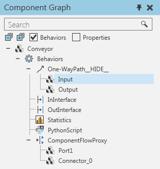
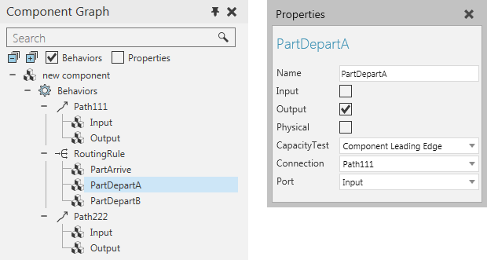
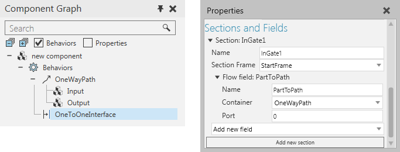
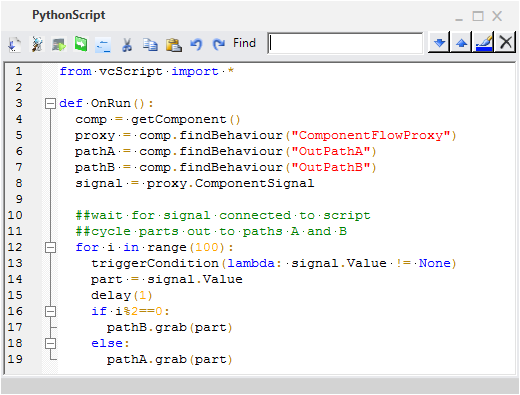
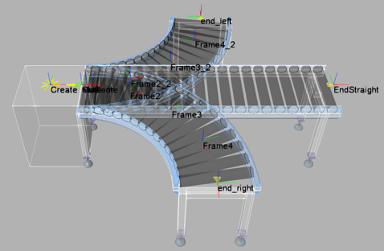
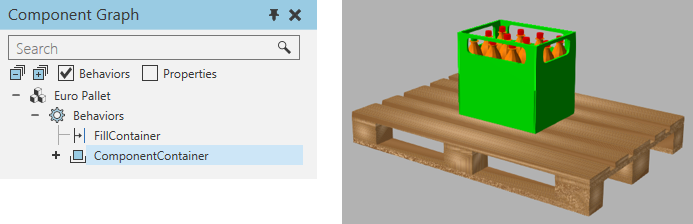

A flow type behavior is used to transfer components from one behavior to another and/or contain components.
Contents Hide
| Name | Description |
| Capacity Controller | Controls the capacity of one or more behaviors that can contain components. |
| Component Container | Stores any number of components based on its capacity. |
| Component Creator | Creates components dynamically during a simulation. |
| Component Flow Proxy | Transfers in and out components arriving from one or more custom ports. |
| One Way Path | Moves components forward along a path. |
| Routing Rule | Transfers in and out components based on a hierarchy of rules. |
| Two Way Path | Moves components forward and/or backward along a path. |
Flow type behaviors have ports, which are connectors that support the transfer of components within a component and to other components.

The properties of a connector are used to form a logical connection between its behavior and another behavior with a matching connector, for example Input to Output and Output to Input.
| Name | Description |
| Name | Defines the name of connector. |
| Input | Defines if the connector transfers in components. |
| Output | Defines if the connector transfers out components. |
| Physical | Defines if the connector is abstract or physical. |
| CapacityTest | Defines the type of capacity test to perform when transferring components to another connector. |
| Connection | Defines the behavior connected to the connector. |
| Port | Defines which connector in Connection is linked to the connector. |
For internal transfers, use the Component Graph panel to select a port, and then edit the transfer by using the Properties panel.

For external transfers, use interface type behaviors.

In some cases, you may need to use scripting to define routing rules and logic for handling dynamic connections, for example a conveyor with multiple entry and exit points. In other cases, scripting is needed to grab and release components from static containers, for example the storage and retrieval of component from racks.

Script for cycling components to different output paths
Some flow type behaviors can move components along paths, which are defined by using Frame features.

Frame features used by paths of diverter conveyor and feeder
Other flow type behaviors cannot physically move components and can either receive components or handle the transfer of components.
